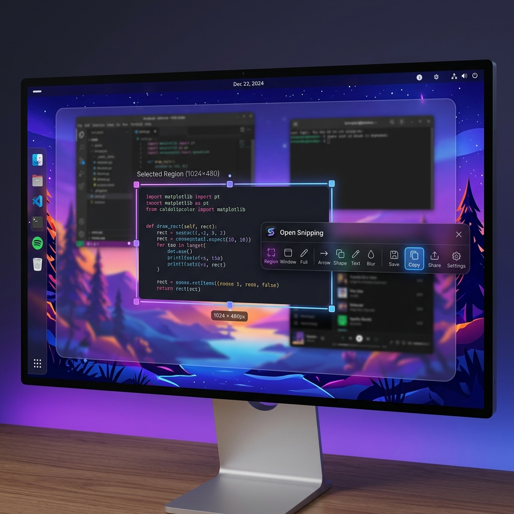

Capture Your Screen,
Effortlessly on Linux.
A fast, lightweight, and keyboard-friendly screenshot tool built natively for X11 and Wayland.

Designed for Productivity
Everything you need to capture, edit, and share instantly.
Silent Fullscreen
Instantly captures the entire screen when triggered. No delays, no interruptions.
Smart Overlay
Frameless, transparent overlay to focus purely on the selected area you want to snip.
Select & Crop
Click and drag with precision to define the exact region you want to capture.
Editor Canvas
An HTML5 canvas-based editor for quick annotations like drawing, highlighting, and arrows.
Quick Export
Instantly copy the snip to your clipboard or save it directly as an image file to disk.
Global Hotkeys
Quick access anywhere via customizable global hotkeys (Default: Ctrl+Shift+D).
Quick Installation
Open Snipping relies on standard lightweight Linux utilities for screen capturing.
$ sudo apt-get install scrot grim
After installing dependencies, download the latest .deb or .AppImage from our Releases Page.